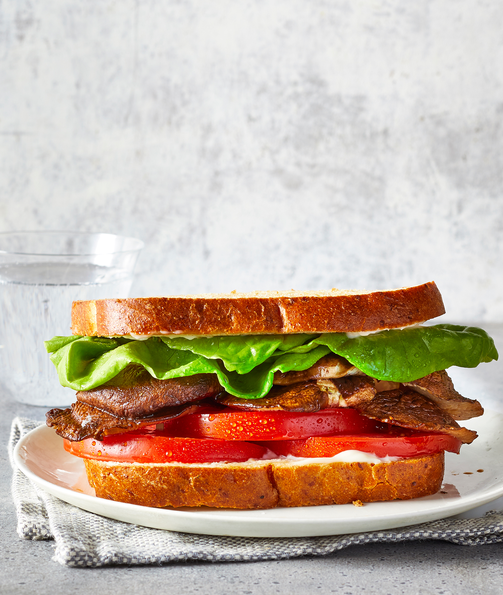

Sandwich

Description
Shiitake mushrooms, when roasted, take on an umami goodness close to that of crispy bacon.
Make sure the mushrooms aren't piled on top of each other on the sheet tray so they can get crispy—otherwise they'll steam.
This brings maximum bacon-like flavor and texture into this vegetarian BLT.
Make our easy mayo from scratch and spread a thin layer on whole-wheat bread, bonus points if it's seeded.
Head to the store and pick up some gorgeous in-season tomatoes for bite after bite of delicious simplicity.
This recipe takes about 30-35 min in for 2 serving
Ingredient's
- 14 ounces fresh shiitake mushrooms, stems removed, caps halved if large
- 1½ tablespoons olive oil
- 1½ tablespoons tamari
- ½ teaspoon fine sea salt
- ¼ teaspoon freshly ground black pepper
- 2 to 4 tablespoons mayonnaise
- 4 whole-grain bread slices, lightly toasted
- 4 green leaf lettuce leaves (from 1 head)
- 6 tomato slices (from 1 medium [6 ounce] tomato)
Directions
- Preheat oven to 400°F.
Toss together mushrooms, oil, tamari, salt, and pepper on a large rimmed baking sheet and spread in an even layer.
Bake until mushrooms are browned and crisp around the edges, 20 to 25 minutes, flipping once halfway through cook time.
- Build sandwiches with mayonnaise, mushrooms, lettuce, and tomato.
Nutrition Facts
Per Serving 510 calories; protein 15g; carbohydrates 41g; fiber 11g; fat 35g; saturated fat 6g; cholesterol 12mg; sugars 11g; sodium 1723mg.